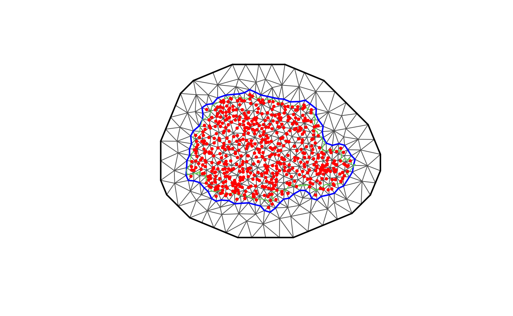
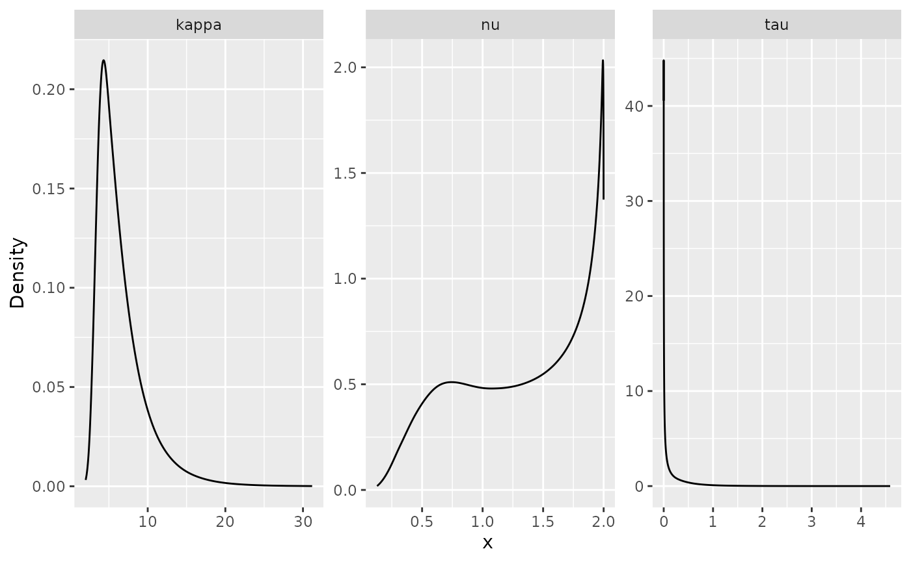
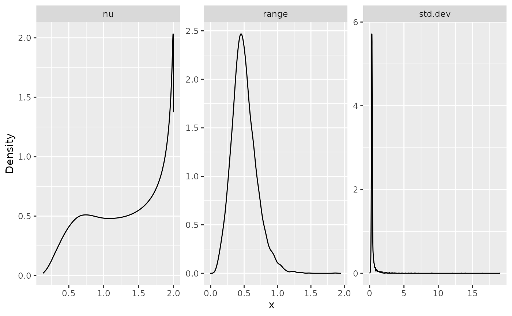
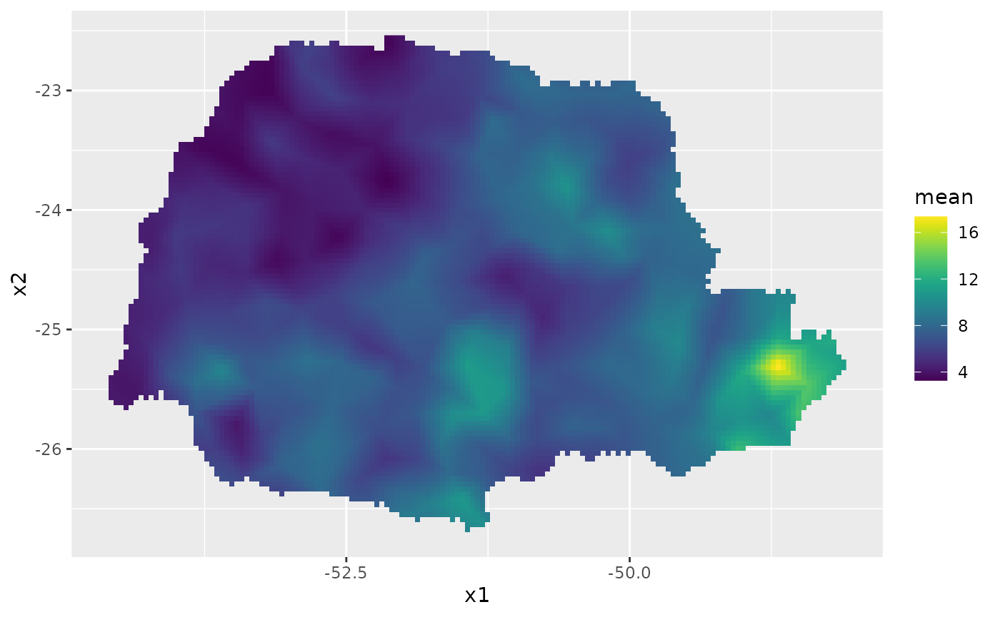
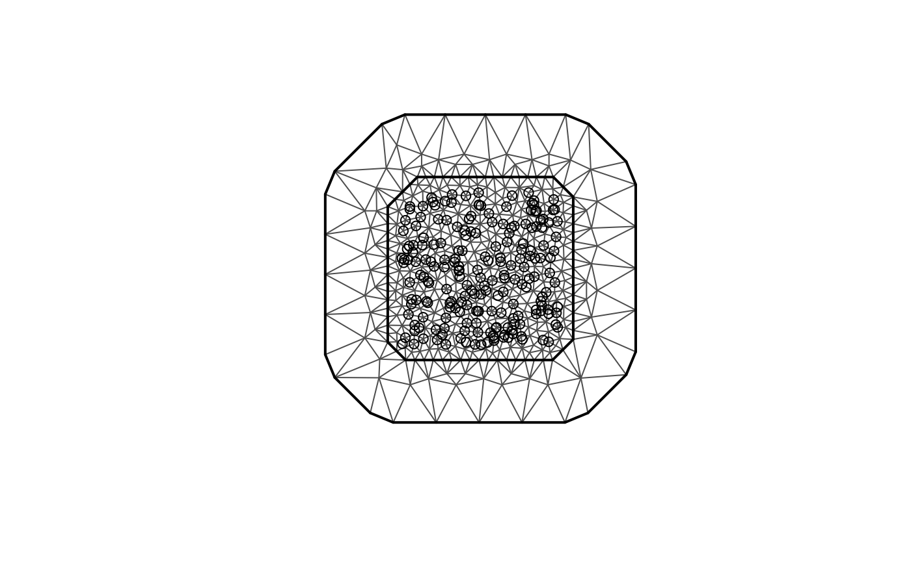
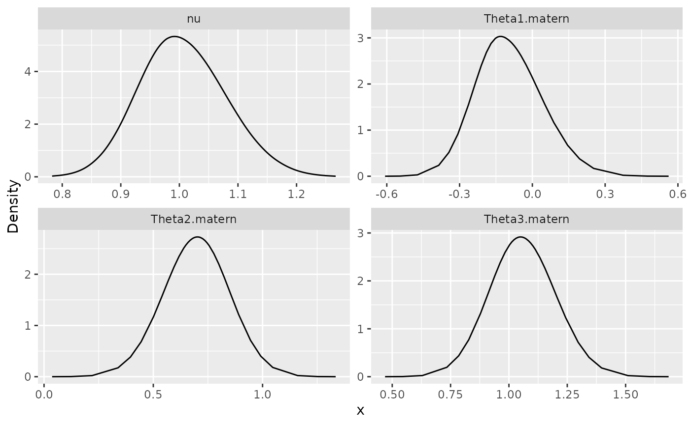

inlabru implementation of the rational SPDE approach
David Bolin and Alexandre B. Simas
Created: 2022-09-13. Last modified: 2023-10-26.
Source:vignettes/rspde_inlabru.Rmd
rspde_inlabru.RmdIntroduction
In this vignette we will present the inlabru implementation of
the covariance-based rational SPDE approach. For further technical
details on the covariance-based approach, see the Rational approximation with the rSPDE
package vignette and Bolin, Simas, and Xiong (2023).
We begin by providing a step-by-step illustration on how to use our implementation. To this end we will consider a real world data set that consists of precipitation measurements from the Paraná region in Brazil.
After the initial model fitting, we will show how to change some parameters of the model. In the end, we will also provide an example in which we have replicates.
The examples in this vignette are the same as those in the R-INLA implementation of the rational SPDE
approach vignette. As in that case, it is important to mention that
one can improve the performance by using the PARDISO solver. Please, go
to https://www.pardiso-project.org/r-inla/#license to apply
for a license. Also, use inla.pardiso() for instructions on
how to enable the PARDISO sparse library.
An example with real data
To illustrate our implementation of rSPDE in inlabru we will consider a
dataset available in R-INLA. This data has
also been used to illustrate the SPDE approach, see for instance the
book Advanced
Spatial Modeling with Stochastic Partial Differential Equations Using R
and INLA and also the vignette Spatial
Statistics using R-INLA and Gaussian Markov random fields. See also
Lindgren, Rue, and Lindström (2011) for
theoretical details on the standard SPDE approach.
The data consist of precipitation measurements from the Paraná region in Brazil and were provided by the Brazilian National Water Agency. The data were collected at 616 gauge stations in Paraná state, south of Brazil, for each day in 2011.
An rSPDE model for precipitation
We will follow the vignette Spatial
Statistics using R-INLA and Gaussian Markov random fields. As
precipitation data are always positive, we will assume it is Gamma
distributed. R-INLA
uses the following parameterization of the Gamma distribution, \[\Gamma(\mu, \phi): \pi (y) =
\frac{1}{\Gamma(\phi)} \left(\frac{\phi}{\mu}\right)^{\phi} y^{\phi - 1}
\exp\left(-\frac{\phi y}{\mu}\right) .\] In this
parameterization, the distribution has expected value \(E(x) = \mu\) and variance \(V(x) = \mu^2/\phi\), where \(1/\phi\) is a dispersion parameter.
In this example \(\mu\) will be modelled using a stochastic model that includes both covariates and spatial structure, resulting in the latent Gaussian model for the precipitation measurements \[\begin{align} y_i\mid \mu(s_i), \theta &\sim \Gamma(\mu(s_i),c\phi)\\ \log (\mu(s)) &= \eta(s) = \sum_k f_k(c_k(s))+u(s)\\ \theta &\sim \pi(\theta) \end{align},\]
where \(y_i\) denotes the
measurement taken at location \(s_i\),
\(c_k(s)\) are covariates, \(u(s)\) is a mean-zero Gaussian Matérn
field, and \(\theta\) is a vector
containing all parameters of the model, including smoothness of the
field. That is, by using the rSPDE model we will also be
able to estimate the smoothness of the latent field.
Examining the data
We will be using inlabru. The
inlabru package is available on CRAN and also on GitHub.
We begin by loading some libraries we need to get the data and build the plots.
Let us load the data and the border of the region
The data frame contains daily measurements at 616 stations for the year 2011, as well as coordinates and altitude information for the measurement stations. We will not analyze the full spatio-temporal data set, but instead look at the total precipitation in January, which we calculate as
Y <- rowMeans(PRprec[, 3 + 1:31])In the next snippet of code, we extract the coordinates and altitudes and remove the locations with missing values.
Let us build a plot for the precipitations:
ggplot() +
geom_point(aes(
x = coords[, 1], y = coords[, 2],
colour = Y
), size = 2, alpha = 1) +
geom_path(aes(x = PRborder[, 1], y = PRborder[, 2])) +
geom_path(aes(x = PRborder[1034:1078, 1], y = PRborder[
1034:1078,
2
]), colour = "red") +
scale_color_viridis()
The red line in the figure shows the coast line, and we expect the distance to the coast to be a good covariate for precipitation.
This covariate is not available, so let us calculate it for each observation location:
Now, let us plot the precipitation as a function of the possible covariates:
par(mfrow = c(2, 2))
plot(coords[, 1], Y, cex = 0.5, xlab = "Longitude")
plot(coords[, 2], Y, cex = 0.5, xlab = "Latitude")
plot(seaDist, Y, cex = 0.5, xlab = "Distance to sea")
plot(alt, Y, cex = 0.5, xlab = "Altitude")
Creating the rSPDE model
To use the inlabru
implementation of the rSPDE model we need to load the
functions:
To create a rSPDE model, one would the
rspde.matern() function in a similar fashion as one would
use the inla.spde2.matern() function.
Mesh
We can use fm_mesh_2d() function from the
fmesher package for creating the mesh. Let us create a mesh
which is based on a non-convex hull to avoid adding many small triangles
outside the domain of interest:
library(fmesher)
prdomain <- fm_nonconvex_hull(coords, -0.03, -0.05, resolution = c(100, 100))
prmesh <- fm_mesh_2d(boundary = prdomain, max.edge = c(0.45, 1), cutoff = 0.2)
plot(prmesh, asp = 1, main = "")
lines(PRborder, col = 3)
points(coords[, 1], coords[, 2], pch = 19, cex = 0.5, col = "red")
Setting up the data frame
In place of a inla.stack, we can set up a
data.frame() to use inlabru. We refer the reader
to vignettes in https://inlabru-org.github.io/inlabru/index.html for
further details.
prdata <- data.frame(long = coords[,1], lat = coords[,2],
seaDist = inla.group(seaDist), y = Y)
coordinates(prdata) <- c("long","lat")Setting up the rSPDE model
To set up an rSPDEmodel, all we need is the mesh. By
default it will assume that we want to estimate the smoothness parameter
\(\nu\) and to do a covariance-based
rational approximation of order 2.
Later in this vignette we will also see other options for setting up
rSPDE models such as keeping the smoothness parameter fixed
and/or increasing the order of the covariance-based rational
approximation.
Therefore, to set up a model all we have to do is use the
rspde.matern() function:
rspde_model <- rspde.matern(mesh = prmesh)Notice that this function is very reminiscent of R-INLA’s
inla.spde2.matern() function.
We will assume the following linkage between model components and observations \[\eta(s) \sim A x(s) + A \text{ Intercept} + \text{seaDist}.\] \(\eta(s)\) will then be used in the observation-likelihood, \[y_i\mid \eta(s_i),\theta \sim \Gamma(\exp(\eta (s_i)), c\phi).\]
Model fitting
We will build a model using the distance to the sea \(x_i\) as a covariate through an improper
CAR(1) model with \(\beta_{ij}=1(i\sim
j)\), which R-INLA calls a random
walk of order 1. We will fit it in inlabru’s style:
cmp <- y ~ Intercept(1) + distSea(seaDist, model="rw1") +
field(coordinates, model = rspde_model)To fit the model we simply use the bru() function:
inlabru results
We can look at some summaries of the posterior distributions for the parameters, for example the fixed effects (i.e. the intercept) and the hyper-parameters (i.e. dispersion in the gamma likelihood, the precision of the RW1, and the parameters of the spatial field):
summary(rspde_fit)## inlabru version: 2.9.0
## INLA version: 23.10.25
## Components:
## Intercept: main = linear(1), group = exchangeable(1L), replicate = iid(1L)
## distSea: main = rw1(seaDist), group = exchangeable(1L), replicate = iid(1L)
## field: main = cgeneric(coordinates), group = exchangeable(1L), replicate = iid(1L)
## Likelihoods:
## Family: 'Gamma'
## Data class: 'SpatialPointsDataFrame'
## Predictor: y ~ .
## Time used:
## Pre = 0.914, Running = 197, Post = 0.634, Total = 199
## Fixed effects:
## mean sd 0.025quant 0.5quant 0.975quant mode kld
## Intercept 1.944 0.052 1.841 1.944 2.046 1.944 0
##
## Random effects:
## Name Model
## distSea RW1 model
## field CGeneric
##
## Model hyperparameters:
## mean sd 0.025quant
## Precision parameter for the Gamma observations 13.973 0.997 12.08
## Precision for distSea 10127.629 7624.454 2523.95
## Theta1 for field 0.796 1.151 -1.13
## Theta2 for field 0.358 0.963 -1.74
## Theta3 for field -3.056 1.533 -6.42
## 0.5quant 0.975quant mode
## Precision parameter for the Gamma observations 13.949 16.003 13.925
## Precision for distSea 8045.646 30440.969 5337.568
## Theta1 for field 0.703 3.331 0.239
## Theta2 for field 0.428 2.005 0.774
## Theta3 for field -2.936 -0.468 -2.338
##
## Deviance Information Criterion (DIC) ...............: 2485.82
## Deviance Information Criterion (DIC, saturated) ....: 715.57
## Effective number of parameters .....................: 101.31
##
## Watanabe-Akaike information criterion (WAIC) ...: 2491.10
## Effective number of parameters .................: 92.33
##
## Marginal log-Likelihood: -1258.37
## is computed
## Posterior summaries for the linear predictor and the fitted values are computed
## (Posterior marginals needs also 'control.compute=list(return.marginals.predictor=TRUE)')Let \(\theta_1 = \textrm{Theta1}\), \(\theta_2=\textrm{Theta2}\) and \(\theta_3=\textrm{Theta3}\). In terms of the SPDE \[(\kappa^2 I - \Delta)^{\alpha/2}(\tau u) = \mathcal{W},\] where \(\alpha = \nu + d/2\), we have that \[\tau = \exp(\theta_1),\quad \kappa = \exp(\theta_2), \] and by default \[\nu = 4\Big(\frac{\exp(\theta_3)}{1+\exp(\theta_3)}\Big).\] The number 4 comes from the upper bound for \(\nu\), which is discussed in R-INLA implementation of the rational SPDE approach vignette.
In general, we have \[\nu = \nu_{UB}\Big(\frac{\exp(\theta_3)}{1+\exp(\theta_3)}\Big),\] where \(\nu_{UB}\) is the value of the upper bound for the smoothness parameter \(\nu\).
Another choice for prior for \(\nu\) is a truncated lognormal distribution and is also discussed in R-INLA implementation of the rational SPDE approach vignette.
inlabru results in the original scale
We can obtain outputs with respect to parameters in the original
scale by using the function rspde.result():
result_fit <- rspde.result(rspde_fit, "field",
rspde_model)
summary(result_fit)## mean sd 0.025quant 0.5quant 0.975quant mode
## tau 4.755110 9.633940 0.32412200 1.959470 27.21550 0.69074900
## kappa 2.137190 1.960350 0.17939400 1.572050 7.37406 0.49435500
## nu 0.360209 0.412448 0.00673735 0.209595 1.53050 0.00815949We can also plot the posterior densities. To this end we will use the
gg_df() function, which creates ggplot2
user-friendly data frames:
posterior_df_fit <- gg_df(result_fit)
ggplot(posterior_df_fit) + geom_line(aes(x = x, y = y)) +
facet_wrap(~parameter, scales = "free") + labs(y = "Density")
We can also obtain the summary on a different parameterization by
setting the parameterization argument on the
rspde.result() function:
result_fit_matern <- rspde.result(rspde_fit, "field",
rspde_model, parameterization = "matern")
summary(result_fit_matern)## mean sd 0.025quant 0.5quant 0.975quant mode
## std.dev 0.155530 0.0897725 0.00808953 0.157077 0.314419 0.22934500
## range 1.021420 0.5711000 0.31468600 0.891706 2.428960 0.67115800
## nu 0.360209 0.4124480 0.00673735 0.209595 1.530500 0.00815949In a similar manner, we can obtain posterior plots on the
matern parameterization:
posterior_df_fit_matern <- gg_df(result_fit_matern)
ggplot(posterior_df_fit_matern) + geom_line(aes(x = x, y = y)) +
facet_wrap(~parameter, scales = "free") + labs(y = "Density")
Predictions
Let us now obtain predictions (i.e. do kriging) of the expected precipitation on a dense grid in the region.
We begin by creating the grid in which we want to do the predictions.
To this end, we can use the fm_evaluator() function:
nxy <- c(150, 100)
projgrid <- fm_evaluator(prmesh,
xlim = range(PRborder[, 1]),
ylim = range(PRborder[, 2]), dims = nxy
)This lattice contains 150 × 100 locations. One can easily change the
resolution of the kriging prediction by changing nxy. Let
us find the cells that are outside the region of interest so that we do
not plot the estimates there.
Let us plot the locations that we will do prediction:
coord.prd <- projgrid$lattice$loc[xy.in, ]
plot(coord.prd, type = "p", cex = 0.1)
lines(PRborder)
points(coords[, 1], coords[, 2], pch = 19, cex = 0.5, col = "red")
Let us now create a data.frame() of the coordinates:
coord.prd.df <- data.frame(x1 = coord.prd[,1],
x2 = coord.prd[,2])
coordinates(coord.prd.df) <- c("x1", "x2")Since we are using distance to the sea as a covariate, we also have
to calculate this covariate for the prediction locations. Finally, we
add the prediction location to our prediction data.frame(),
namely, coord.prd.df:
seaDist.prd <- apply(spDists(coord.prd,
PRborder[1034:1078, ],
longlat = TRUE
), 1, min)
coord.prd.df$seaDist <- seaDist.prdLet us now build the data frame with the results:
pred_df <- pred_obs@data
pred_df <- cbind(pred_df, pred_obs@coords)Finally, we plot the results. First the predicted mean:
ggplot(pred_df, aes(x = x1, y = x2, fill = mean)) +
geom_raster() +
scale_fill_viridis()
Then, the std. deviations:
ggplot(pred_df, aes(x = x1, y = x2, fill = sd)) +
geom_raster() + scale_fill_viridis()An example with replicates
For this example we will simulate a data with replicates. We will use
the same example considered in the Rational
approximation with the rSPDE package vignette (the only
difference is the way the data is organized). We also refer the reader
to this vignette for a description of the function
matern.operators(), along with its methods (for instance,
the simulate() method).
Simulating the data
Let us consider a simple Gaussian linear model with 30 independent replicates of a latent spatial field \(x(\mathbf{s})\), observed at the same \(m\) locations, \(\{\mathbf{s}_1 , \ldots , \mathbf{s}_m \}\), for each replicate. For each \(i = 1,\ldots,m,\) we have
\[\begin{align} y_i &= x_1(\mathbf{s}_i)+\varepsilon_i,\\ \vdots &= \vdots\\ y_{i+29m} &= x_{30}(\mathbf{s}_i) + \varepsilon_{i+29m}, \end{align}\]
where \(\varepsilon_1,\ldots,\varepsilon_{30m}\) are iid normally distributed with mean 0 and standard deviation 0.1.
We use the basis function representation of \(x(\cdot)\) to define the \(A\) matrix linking the point locations to
the mesh. We also need to account for the fact that we have 30
replicates at the same locations. To this end, the \(A\) matrix we need can be generated by
spde.make.A() function. The reason being that we are
sampling \(x(\cdot)\) directly and not
the latent vector described in the introduction of the Rational approximation with the rSPDE
package vignette.
We begin by creating the mesh:
m <- 200
loc_2d_mesh <- matrix(runif(m * 2), m, 2)
mesh_2d <- fm_mesh_2d(
loc = loc_2d_mesh,
cutoff = 0.05,
offset = c(0.1, 0.4),
max.edge = c(0.05, 0.5)
)
plot(mesh_2d, main = "")
points(loc_2d_mesh[, 1], loc_2d_mesh[, 2])
We then compute the \(A\) matrix,
which is needed for simulation, and connects the observation locations
to the mesh. To this end we will use the spde.make.A()
helper function, which is a wrapper that uses the functions
fm_basis(), fm_block() and
fm_row_kron() from the fmesher package.
n.rep <- 30
A <- spde.make.A(
mesh = mesh_2d,
loc = loc_2d_mesh,
index = rep(1:m, times = n.rep),
repl = rep(1:n.rep, each = m)
)Notice that for the simulated data, we should use the \(A\) matrix from spde.make.A()
function instead of the rspde.make.A().
We will now simulate a latent process with standard deviation \(\sigma=1\) and range \(0.1\). We will use \(\nu=0.5\) so that the model has an
exponential covariance function. To this end we create a model object
with the matern.operators() function:
nu <- 0.5
sigma <- 1
range <- 0.1
kappa <- sqrt(8 * nu) / range
tau <- sqrt(gamma(nu) / (sigma^2 * kappa^(2 * nu) * (4 * pi) * gamma(nu + 1)))
d <- 2
operator_information <- matern.operators(
mesh = mesh_2d,
nu = nu,
range = range,
sigma = sigma,
m = 2,
parameterization = "matern"
)More details on this function can be found at the Rational approximation with the rSPDE package vignette.
To simulate the latent process all we need to do is to use the
simulate() method on the operator_information
object. We then obtain the simulated data \(y\) by connecting with the \(A\) matrix and adding the gaussian
noise.
set.seed(1)
u <- simulate(operator_information, nsim = n.rep)
y <- as.vector(A %*% as.vector(u)) +
rnorm(m * n.rep) * 0.1The first replicate of the simulated random field as well as the observation locations are shown in the following figure.
proj <- fm_evaluator(mesh_2d, dims = c(100, 100))
df_field <- data.frame(x = proj$lattice$loc[,1],
y = proj$lattice$loc[,2],
field = as.vector(fm_evaluate(proj,
field = as.vector(u[, 1]))),
type = "field")
df_loc <- data.frame(x = loc_2d_mesh[, 1],
y = loc_2d_mesh[, 2],
field = y[1:m],
type = "locations")
df_plot <- rbind(df_field, df_loc)
ggplot(df_plot) + aes(x = x, y = y, fill = field) +
facet_wrap(~type) + xlim(0,1) + ylim(0,1) +
geom_raster(data = df_field) +
geom_point(data = df_loc, aes(colour = field),
show.legend = FALSE) +
scale_fill_viridis() + scale_colour_viridis()
Fitting the inlabru rSPDE model
Let us then use the rational SPDE approach to fit the data.
We begin by creating the model object.
rspde_model.rep <- rspde.matern(mesh = mesh_2d,
parameterization = "spde") Let us now create the data.frame() and the vector with
the replicates indexes:
rep.df <- data.frame(y = y, x1 = rep(loc_2d_mesh[,1], n.rep),
x2 = rep(loc_2d_mesh[,2], n.rep))
coordinates(rep.df) <- c("x1", "x2")
repl <- rep(1:n.rep, each=m)Let us create the component and fit. It is extremely important not to
forget the replicate when fitting model with the
bru() function. It will not produce warning and might fit
some meaningless model.
cmp.rep <-
y ~ -1 + field(coordinates,
model = rspde_model.rep,
replicate = repl
)
rspde_fit.rep <-
bru(cmp.rep,
data = rep.df,
family = "gaussian"
)We can get the summary:
summary(rspde_fit.rep)## inlabru version: 2.9.0
## INLA version: 23.10.25
## Components:
## field: main = cgeneric(coordinates), group = exchangeable(1L), replicate = iid(repl)
## Likelihoods:
## Family: 'gaussian'
## Data class: 'SpatialPointsDataFrame'
## Predictor: y ~ .
## Time used:
## Pre = 0.534, Running = 1058, Post = 19.7, Total = 1078
## Random effects:
## Name Model
## field CGeneric
##
## Model hyperparameters:
## mean sd 0.025quant 0.5quant
## Precision for the Gaussian observations 101.05 7.275 87.46 100.79
## Theta1 for field -2.98 0.077 -3.16 -2.98
## Theta2 for field 3.08 0.036 3.01 3.08
## Theta3 for field -1.66 0.036 -1.72 -1.66
## 0.975quant mode
## Precision for the Gaussian observations 116.09 100.30
## Theta1 for field -2.86 -2.93
## Theta2 for field 3.15 3.08
## Theta3 for field -1.57 -1.68
##
## Deviance Information Criterion (DIC) ...............: -5793.16
## Deviance Information Criterion (DIC, saturated) ....: 10856.25
## Effective number of parameters .....................: 4853.80
##
## Watanabe-Akaike information criterion (WAIC) ...: -6859.16
## Effective number of parameters .................: 2773.09
##
## Marginal log-Likelihood: -4539.60
## is computed
## Posterior summaries for the linear predictor and the fitted values are computed
## (Posterior marginals needs also 'control.compute=list(return.marginals.predictor=TRUE)')and the summary in the user’s scale:
result_fit_rep <- rspde.result(rspde_fit.rep, "field", rspde_model.rep)
summary(result_fit_rep)## mean sd 0.025quant 0.5quant 0.975quant mode
## tau 0.0507729 0.00382052 0.0425098 0.0511662 0.0571211 0.0530676
## kappa 21.7653000 0.77643700 20.3017000 21.7423000 23.3502000 21.6869000
## nu 0.6414820 0.01960410 0.6101190 0.6389200 0.6857020 0.6300200
result_df <- data.frame(
parameter = c("tau", "kappa", "nu"),
true = c(tau, kappa, nu),
mean = c(
result_fit_rep$summary.tau$mean,
result_fit_rep$summary.kappa$mean,
result_fit_rep$summary.nu$mean
),
mode = c(
result_fit_rep$summary.tau$mode,
result_fit_rep$summary.kappa$mode,
result_fit_rep$summary.nu$mode
)
)
print(result_df)## parameter true mean mode
## 1 tau 0.08920621 0.05077288 0.0530676
## 2 kappa 20.00000000 21.76525677 21.6868788
## 3 nu 0.50000000 0.64148235 0.6300204Let us also obtain the summary on the matern
parameterization:
result_fit_rep_matern <- rspde.result(rspde_fit.rep, "field", rspde_model.rep,
parameterization = "matern")
summary(result_fit_rep_matern)## mean sd 0.025quant 0.5quant 0.975quant mode
## std.dev 1.072210 0.01283110 1.0478800 1.072130 1.098000 1.074260
## range 0.103751 0.00429796 0.0956853 0.103618 0.112577 0.102472
## nu 0.641482 0.01960410 0.6101190 0.638920 0.685702 0.630020
result_df_matern <- data.frame(
parameter = c("std_dev", "range", "nu"),
true = c(sigma, range, nu),
mean = c(
result_fit_rep_matern$summary.std.dev$mean,
result_fit_rep_matern$summary.range$mean,
result_fit_rep_matern$summary.nu$mean
),
mode = c(
result_fit_rep$summary.std.dev$mode,
result_fit_rep$summary.range$mode,
result_fit_rep$summary.nu$mode
)
)
print(result_df_matern)## parameter true mean mode
## 1 std_dev 1.0 1.0722133 0.6300204
## 2 range 0.1 0.1037509 0.6300204
## 3 nu 0.5 0.6414823 0.6300204An example with a non-stationary model
Our goal now is to show how one can fit model with non-stationary \(\sigma\) (std. deviation) and non-stationary \(\rho\) (a range parameter). One can also use the parameterization in terms of non-stationary SPDE parameters \(\kappa\) and \(\tau\).
For this example we will consider simulated data.
Simulating the data
Let us consider a simple Gaussian linear model with a latent spatial field \(x(\mathbf{s})\), defined on the rectangle \((0,10) \times (0,5)\), where the std. deviation and range parameter satisfy the following log-linear regressions: \[\begin{align} \log(\sigma(\mathbf{s})) &= \theta_1 + \theta_3 b(\mathbf{s}),\\ \log(\rho(\mathbf{s})) &= \theta_2 + \theta_3 b(\mathbf{s}), \end{align}\] where \(b(\mathbf{s}) = (s_1-5)/10\). We assume the data is observed at \(m\) locations, \(\{\mathbf{s}_1 , \ldots , \mathbf{s}_m \}\). For each \(i = 1,\ldots,m,\) we have
\[y_i = x_1(\mathbf{s}_i)+\varepsilon_i,\]
where \(\varepsilon_1,\ldots,\varepsilon_{m}\) are iid normally distributed with mean 0 and standard deviation 0.1.
We begin by defining the domain and creating the mesh:
rec_domain <- cbind(c(0, 1, 1, 0, 0) * 10, c(0, 0, 1, 1, 0) * 5)
mesh <- fm_mesh_2d(loc.domain = rec_domain, cutoff = 0.1,
max.edge = c(0.5, 1.5), offset = c(0.5, 1.5))We follow the same structure as INLA. However,
INLA only allows one to specify B.tau and
B.kappa matrices, and, in INLA, if one wants
to parameterize in terms of range and standard deviation one needs to do
it manually. Here we provide the option to directly provide the matrices
B.sigma and B.range.
The usage of the matrices B.tau and B.kappa
are identical to the corresponding ones in
inla.spde2.matern() function. The matrices
B.sigma and B.range work in the same way, but
they parameterize the stardard deviation and range, respectively.
The columns of the B matrices correspond to the same
parameter. The first column does not have any parameter to be estimated,
it is a constant column.
So, for instance, if one wants to share a parameter with both
sigma and range (or with both tau
and kappa), one simply let the corresponding column to be
nonzero on both B.sigma and B.range (or on
B.tau and B.kappa).
We will assume \(\nu = 0.8\), \(\theta_1 = 0, \theta_2 = 1\) and \(\theta_3=1\). Let us now build the model to
obtain the sample with the spde.matern.operators()
function:
nu <- 0.8
true_theta <- c(0,1, 1)
B.sigma = cbind(0, 1, 0, (mesh$loc[,1] - 5) / 10)
B.range = cbind(0, 0, 1, (mesh$loc[,1] - 5) / 10)
# SPDE model
op_cov_ns <- spde.matern.operators(mesh = mesh,
theta = true_theta,
nu = nu,
B.sigma = B.sigma,
B.range = B.range, m = 2,
parameterization = "matern")Let us now sample the data with the simulate()
method:
Let us now obtain 600 random locations on the rectangle and compute the \(A\) matrix:
m <- 600
loc_mesh <- cbind(runif(m) * 10, runif(m) * 5)
A <- spde.make.A(
mesh = mesh,
loc = loc_mesh
)We can now generate the response vector y:
Fitting the inlabru rSPDE model
Let us then use the rational SPDE approach to fit the data.
We begin by creating the model object. We are creating a new one so that we do not start the estimation at the true values.
rspde_model_nonstat <- rspde.matern(mesh = mesh,
B.sigma = B.sigma,
B.range = B.range,
parameterization = "matern") Let us now create the data.frame() and the vector with
the replicates indexes:
nonstat_df <- data.frame(y = y, x1 = loc_mesh[,1],
x2 = loc_mesh[,2])
coordinates(nonstat_df) <- c("x1", "x2")Let us create the component and fit. It is extremely important not to
forget the replicate when fitting model with the
bru() function. It will not produce warning and might fit
some meaningless model.
cmp_nonstat <-
y ~ -1 + field(coordinates,
model = rspde_model_nonstat
)
rspde_fit_nonstat <-
bru(cmp_nonstat,
data = nonstat_df,
family = "gaussian",
options = list(verbose = FALSE)
)We can get the summary:
summary(rspde_fit_nonstat)## inlabru version: 2.9.0
## INLA version: 23.10.25
## Components:
## field: main = cgeneric(coordinates), group = exchangeable(1L), replicate = iid(1L)
## Likelihoods:
## Family: 'gaussian'
## Data class: 'SpatialPointsDataFrame'
## Predictor: y ~ .
## Time used:
## Pre = 0.496, Running = 636, Post = 0.819, Total = 637
## Random effects:
## Name Model
## field CGeneric
##
## Model hyperparameters:
## mean sd 0.025quant 0.5quant
## Precision for the Gaussian observations 105.113 11.283 84.780 104.470
## Theta1 for field -0.128 0.119 -0.366 -0.127
## Theta2 for field 0.773 0.171 0.435 0.774
## Theta3 for field 0.969 0.462 -0.024 0.997
## Theta4 for field -1.217 0.198 -1.619 -1.212
## 0.975quant mode
## Precision for the Gaussian observations 129.153 103.111
## Theta1 for field 0.103 -0.122
## Theta2 for field 1.106 0.778
## Theta3 for field 1.783 1.136
## Theta4 for field -0.840 -1.194
##
## Deviance Information Criterion (DIC) ...............: -730.00
## Deviance Information Criterion (DIC, saturated) ....: 947.80
## Effective number of parameters .....................: 348.45
##
## Watanabe-Akaike information criterion (WAIC) ...: -767.60
## Effective number of parameters .................: 235.01
##
## Marginal log-Likelihood: -13.72
## is computed
## Posterior summaries for the linear predictor and the fitted values are computed
## (Posterior marginals needs also 'control.compute=list(return.marginals.predictor=TRUE)')We can obtain outputs with respect to parameters in the original
scale by using the function rspde.result():
result_fit_nonstat <- rspde.result(rspde_fit_nonstat, "field", rspde_model_nonstat)
summary(result_fit_nonstat)## mean sd 0.025quant 0.5quant 0.975quant mode
## Theta1.matern -0.128236 0.119093 -0.3659800 -0.127123 0.10294 -0.122394
## Theta2.matern 0.772973 0.170513 0.4345620 0.773898 1.10596 0.777796
## Theta3.matern 0.969207 0.462312 -0.0243082 0.997304 1.78273 1.135690
## nu 0.921603 0.137980 0.6638590 0.918039 1.20358 0.914894Let us compare the mean to the true values of the parameters:
summ_res_nonstat <- summary(result_fit_nonstat)
result_df <- data.frame(
parameter = result_fit_nonstat$params,
true = c(true_theta, nu),
mean = summ_res_nonstat[,1],
mode = summ_res_nonstat[,6]
)
print(result_df)## parameter true mean mode
## 1 Theta1.matern 0.0 -0.128236 -0.122394
## 2 Theta2.matern 1.0 0.772973 0.777796
## 3 Theta3.matern 1.0 0.969207 1.135690
## 4 nu 0.8 0.921603 0.914894We can also plot the posterior densities. To this end we will use the
gg_df() function, which creates ggplot2
user-friendly data frames:
posterior_df_fit <- gg_df(result_fit_nonstat)
ggplot(posterior_df_fit) + geom_line(aes(x = x, y = y)) +
facet_wrap(~parameter, scales = "free") + labs(y = "Density")
Further options of the inlabru implementation
There are several additional options that are available. For
instance, it is possible to change the order of the rational
approximation, the upper bound for the smoothness parameter (which may
speed up the fit), change the priors, change the type of the rational
approximation, among others. These options are described in the “Further
options of the rSPDE-INLA implementation”
section of the R-INLA implementation of the
rational SPDE approach vignette. Observe that all these options are
passed to the model through the rspde.matern() function,
and therefore the resulting model object can directly be used in the
bru() function, in an identical manner to the examples
above.